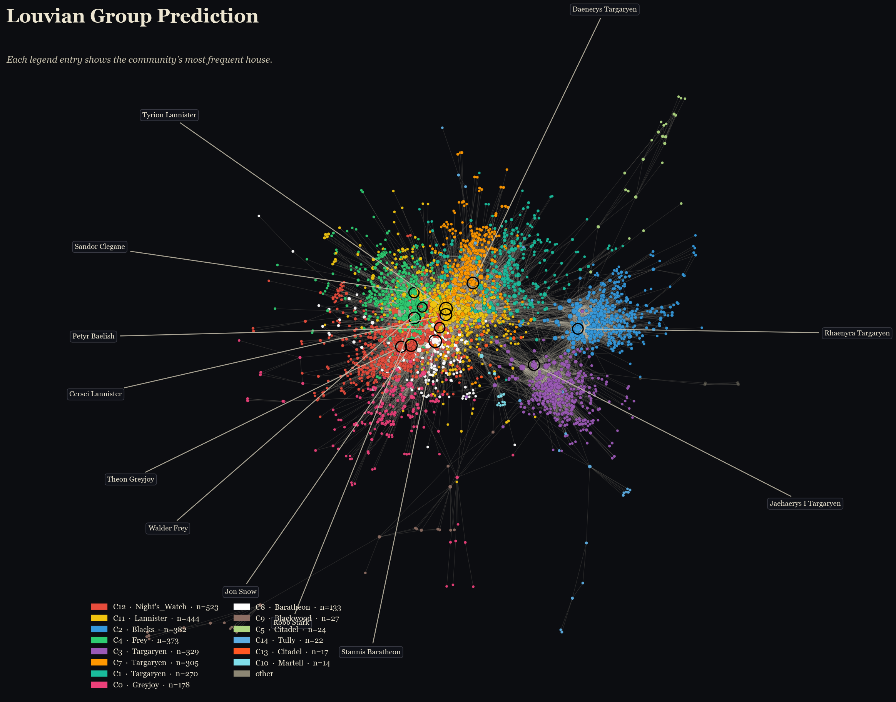
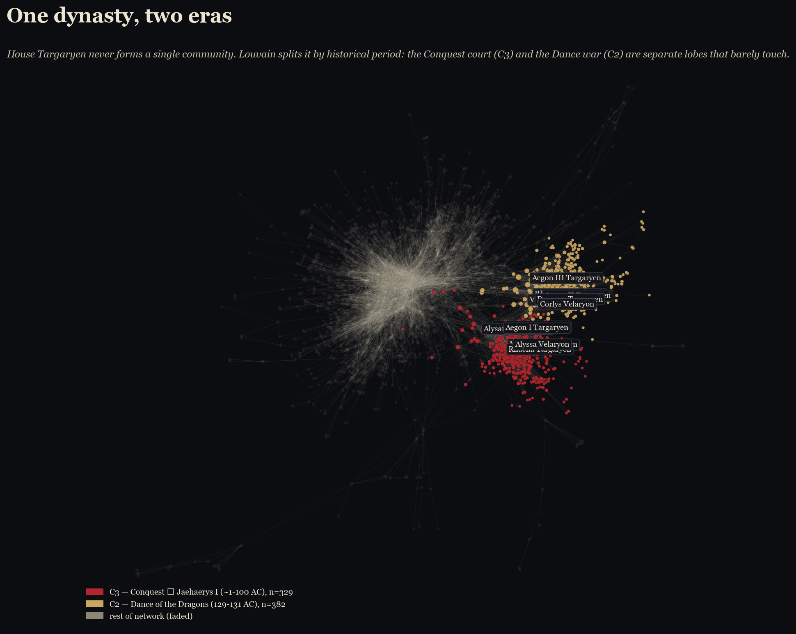
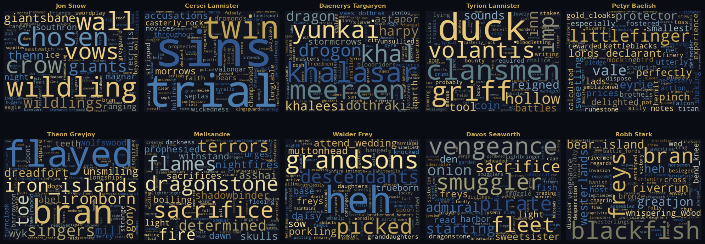
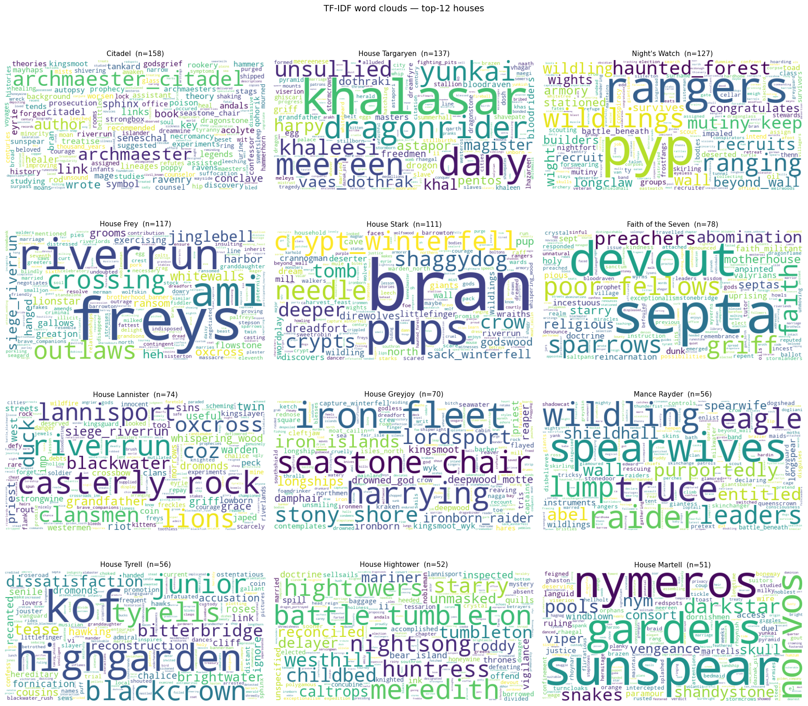

A Song of Ice and Fire · data story
When you play the game of thrones, someone takes notes.
Westeros has thousands of named characters, hundreds of allegiances, and a chronicle full of grudges. We turn the wiki of A Song of Ice and Fire into a network, ask which characters truly hold it together, and use language and an LLM-scored karma layer to see how conflict shapes the story.
Chapter I
Why Westeros?
George R. R. Martin's saga is a story about relationships: alliances and betrayals, marriages and murders, oaths kept and broken. That makes it an unusually rich text for network science. Where most fiction has a clear protagonist, Westeros has a tangle of perspectives — and a wiki that has catalogued nearly every name.
The central question of this project is:
Can we infer allegiances, conflicts, and defining characteristics for the allegiances of Westeros from computational social science methods alone — without reading the books?
Four sub-questions structure the analysis, one per chapter that follows:
- Topology. Does the affiliation network's degree distribution and assortativity look like a real social graph, or could a randomly-rewired network produce the same pattern?
- Community structure. Can a community-detection algorithm recover the allegiance labels from the network alone, without ever reading a banner?
- Vocabulary. What words distinguish each allegiance's collected biographies and quotes beyond who they know?
- Karma. Score every directed character relationship from 1 (sworn enemy) to 10 (closest bond) with a local language model. Do the resulting "feelings" align with canonical conflicts and loyalties?
Fictional networks make a useful sandbox: we have stable domain knowledge, the data is open and reproducible, and the failures — when a method gets something obviously wrong — are easy to spot. The project is as much about what computational social science methods can and cannot do as it is about Westeros.
What we have to work with
Each row in our cleaned dataset
(characters_enriched_v3.csv) is one named
character scraped from A Wiki of Ice and Fire. For
every character we keep their canonical name and ID, their
family ties (father, mother, spouse, lover, issue), their
primary allegiance, and the list of other characters they
are affiliated with — the field that becomes the
backbone of the network.
81% of characters (2,990 of 3,690) declare at least one allegiance, spread across 546 distinct allegiances (houses, orders, and factions). House Targaryen is the largest with 215 members, followed by the Night's Watch, the Citadel, House Frey, and House Stark. The full distribution is the long tail you would expect — a handful of dynasties and a fog of one-off retainers.
The v3 cleanup is the version we trust for analysis. Family tree edges are kept in their own columns rather than mixed into the affiliation network, so a great-great-grandfather no longer counts as a teammate; only narrative co-mentions do. That single change is what makes the network behave like a story instead of a genealogy chart.
Chapter II
The Shape of the Realm
Before we go looking for stories in the data, we ask what kind of network this even is. A handful of giants and a long tail of footnotes? Or something flatter? We compare the real Westeros network against a randomly-rewired counterpart to see what's distinctive about it.


Chapter III
Predicting the Allegiances
The map of Westeros divides the realm into allegiances; the wiki labels every character with one. But could we recover that division from the network alone — without ever reading a banner? We run Louvain community detection on the cleaned graph and compare the algorithm's communities to the true allegiance labels.




Chapter IV
Defining the Storylines
Network structure tells us who is connected to whom; the text tells us about what. We combine biography text and attributed quotes, then use TF-IDF to surface the words that make each character or allegiance distinctive. These are not simply the most common words, but the words that separate one storyline from the others.

duck token is a useful caveat: it
comes from Ser Rolly Duckfield's nickname, showing how a repeated
companion alias can become distinctive in the text.

duck token comes mainly from Tyrion's
corpus, not from a broader Lannister theme.
The word clouds add a text layer to the network analysis. The network shows where characters sit socially; TF-IDF shows the story-world vocabulary that surrounds them. Character clouds tend to recover local arcs and settings, while allegiance clouds recover broader collective identities: northern geography around Stark, dragons and Valyrian language around Targaryen, seafaring around Greyjoy, and institutional vocabulary around the Citadel.
The clouds should be read as visual summaries, not exact ranked evidence. The explainer notebook contains the underlying TF-IDF tables and the full discussion of limitations, including wiki source-section language, adaptation wording, and nickname leakage.
Chapter V
The Karma of Conflict
A network shows who is connected. The text shows what they talk about. Neither tells us how they feel about one another. For the top 100 most connected characters, we asked a local language model to read the biographies and rate each directed relationship on a one-to-ten karma scale. The result is a map of who fights whom — and a reminder that this is a conflict-driven story.

Ten points of view
Each panel below is one character's outgoing karma: their view of the people around them. Red edges mark enemy scores, grey edges mark neutral ties, green edges mark friend scores, and thicker lines sit farther from the neutral middle.


Appendix
Take the Data
The website is the readable story. The notebooks are the work behind it — scraping, cleaning, the network construction, the LLM scoring, and every choice we made along the way.
Cleaned character network
Characters with allegiance and cleaned affiliation links.
Download CSV (574 KB)Karma-scored edges
Source–target pairs among the top 100 with 1–10 karma scores.
Download CSV (165 KB)Top 100 hubs
The highest outgoing-degree characters after cleanup.
Download CSV (82 KB)Quote corpus
Per-character quotes with speaker and recipient IDs where available.
Download CSV (1.1 MB)Character biographies
Biography text used as context for analysis and karma scoring.
Download CSV (4.1 MB)